People
The AI Thought Partner Lab is in the Department of Computer Science at Purdue University and opened in August 2026. Its members work in West Lafayette, Indiana, and in New York.

Ilia Sucholutsky
Assistant Professor, Computer Science, Purdue UniversityIlia Sucholutsky is an Assistant Professor of Computer Science at Purdue University, where he leads the AI Thought Partner Lab in developing AI that thinks with people rather than instead of them. His research asks what a system must understand about individuals, pairs, and groups to be a good partner, using a combination of theory, simulation, and large-scale human-AI studies. He is also co-PI on the DARPA In the Moment program on algorithmic trust and previously held positions at NYU and Princeton.
Current members
Purdue
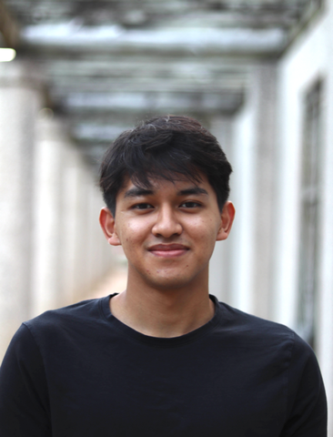
I'm a CS Ph.D. student at Purdue. Currently my research focus is understanding deep neural representations and broadly improving foundation models.
Neural Representations, Foundation Models
Fun fact: I've solo climbed a mountain without a map.
WebsiteMy research area is Machine Learning and Cognitive Science. I'm interested in finding better ways for AI to interact with humans.
Machine Learning, Cognitive Science, Human-AI Interaction
Fun fact: I lost my phone on the top of a mountain and found it the next day.
WebsiteI'm a PhD student in the department. My background is in planning algorithms, with a focus on Reinforcement Learning.
Reinforcement Learning, HCI, Collective Intelligence
Fun fact: My last name means 'a guy who has a strong horse,' which is not true... yet.
Website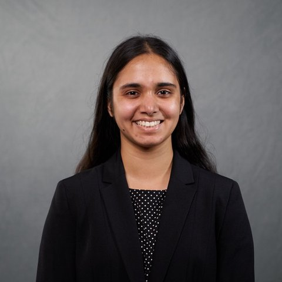
Uma Kulkarni is a first-year CS Ph.D. student studying Human-Computer Interaction at Purdue University. Her research investigates the biases, decision-making patterns, and broader social impacts that emerge during interactions between AI systems and human users.
Human-Computer Interaction, AI Bias & Decision-Making
Fun fact: In my free time, I love baking, writing, and listening to musical soundtracks!
LinkedIn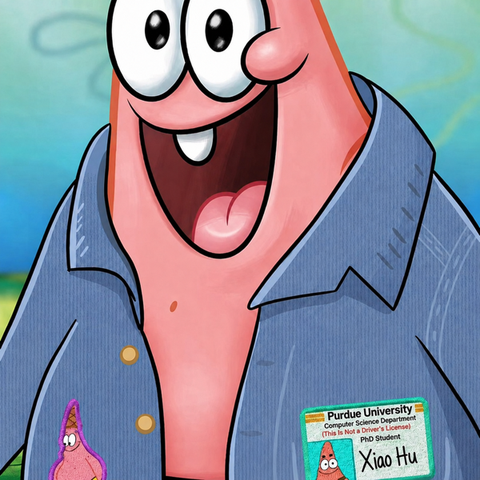
My research interests include the robustness of visual in-context learning models (VICL), as well as their alignment across models and with human representations.
Visual In-Context Learning, Representational Alignment
Fun fact: I have a small gray Teddy puppy!
LinkedIn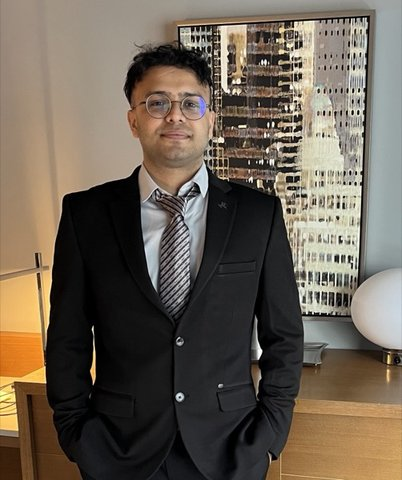
I'm a first-year CS PhD student at Purdue. I'm interested in understanding human-AI interactions, particularly their complementary and competitive aspects.
Human-AI Interaction, Multi-Agent Systems, AI for Scientific Discovery
Fun fact: I used to be a vocalist in a band during undergrad, so if you ever want to jam, hit me up!
New York
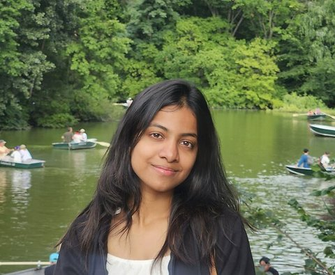
I am a graduate student majoring in Computer Science at NYU and am broadly interested in formalizing how humans and machines process language and navigate decision making. I study how humans update their beliefs by combining prior knowledge with new information, and the conditions under which this breaks down.
Heuristics and Biases, Diagnostic Inference and Decision Making
Fun fact: I love crocheting! My most frequent internal monologue being, 'I can definitely make that in crochet.' I also love hiking, going on long walks and running!
Website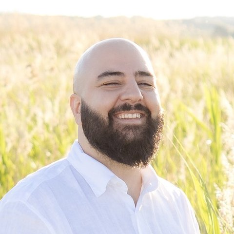
I'm a postdoc studying how and when people trust and defer to AI, and what makes AI worth deferring to.
Trust in AI, Reliance and Deference, Human-AI Decision Making
Fun fact: I can hit a fly with nunchucks.
WebsiteVisitors and affiliates
I’m a Master’s student in Computer Science at NYU Courant. My research focuses on reasoning in large language models, particularly on improving hypothesis exploration, with inspiration from cognitive science.
Large Language Models, Cognitive Science, Reasoning
Fun fact: Always up for a game of soccer! Love cooking Thai food.
Website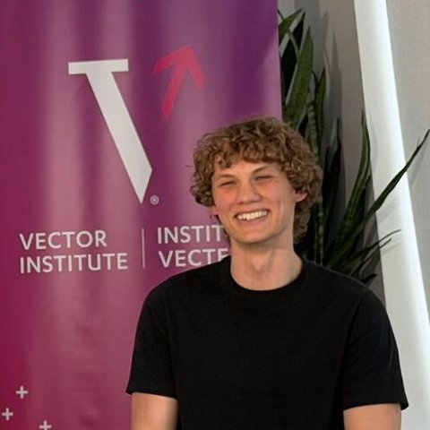
I'm a graduate student researcher at UBC interested in synthesizing a more complete understanding of agency and consciousness, both individually and collectively, by combining ideas from computer science, mathematical modelling, and philosophy. Currently, I am particularly interested in how social engineering and hive-mind thinking can influence agents to make irrational decisions, especially with increasing autonomous AI agents and their integration into society.
Cognitive Science, Intelligence, Philosophy
Fun fact: I was on an episode of TVOKids called 'What is AI Anyway?' where I got to explain my research to kids. I also go backcountry camping and portaging for as long as weeks in the summers in Northern Ontario.
Website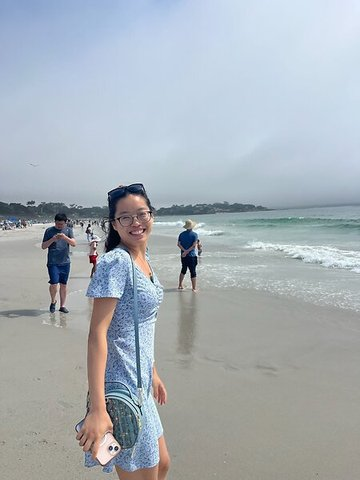
Sunny Yu is an undergraduate student studying Symbolic Systems and Computer Science at Stanford University, working with the Stanford NLP Group.
Cognitive Science, AI, Large Language Models, Post-Training, Human-AI Interaction
Fun fact: Enjoys running, all racquet sports, outdoor activities, and card games.
WebsiteAndy is a first-year PhD student in computer science at NYU, advised by Claudio Silva and Pavel Izmailov. Before this, he worked in industry as an engineer; before that, he graduated from Pomona College in philosophy and computer science.
AI Safety, AI Welfare, Visualization
Fun fact: When not writing prompts, he's writing blog posts and reading Emily Dickinson!
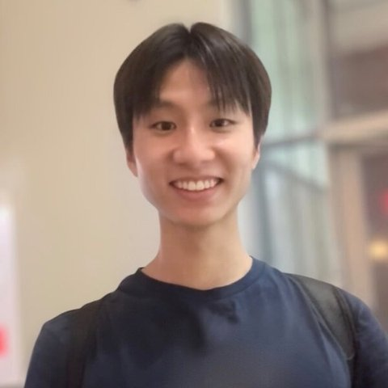
Kai Xu is a second-year PhD student at NYU advised by He He. Through his research, he hopes to contribute to a future where AI can safely and reliably advance human flourishing, especially in scientific domains.
AI for Science, Benchmarking, Safety
Fun fact: He enjoys sprinting, composing music, and learning about human social behavior.
Google ScholarTiancheng Yang is a PhD student in the Department of Statistics and Actuarial Science at the University of Waterloo, supervised by Prof. Matthias Schonlau. His research interests include natural language processing, AI agents, and survey research.
Natural Language Processing, AI Agents, Survey Research
Fun fact: He enjoys cooking and exploring good food.
LinkedInValerie is a Machine Learning PhD student at CMU. Her work bridges machine learning, natural language processing, and human-computer interaction to advance the design of collaborative AI systems.
Human-AI Collaboration, AI Agents, Interactive Evaluation
Fun fact: I love to travel (the headshot was taken at Granada, Spain).
Website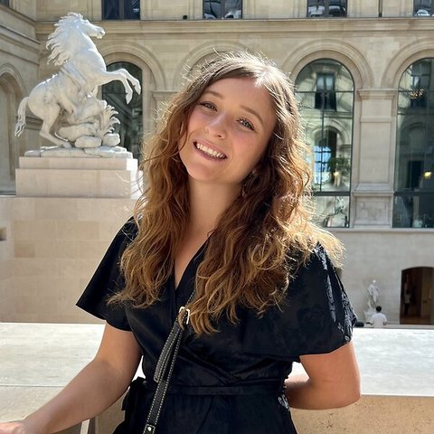
Elizabeth is a PhD candidate at Princeton Computer Science advised by Tom Griffiths and Natalia Vélez. She studies multi-agent teams (human, AI, and both) by developing formal frameworks to characterize optimal collaborative strategies and trade-offs, and testing these models with multiplayer human experiments, LLM teams, and multi-agent reinforcement learning.
Multi-Agent Systems, Cognitive Science
Fun fact: Her cat is named Pascal (as in, the triangle)!
Website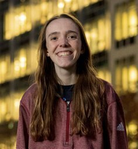
Cognitive Science, Applied CoCoSci, Thought Partners
Fun fact: I am very afraid of winds of 65+ mph (recently pushed up from 60 mph!).
Website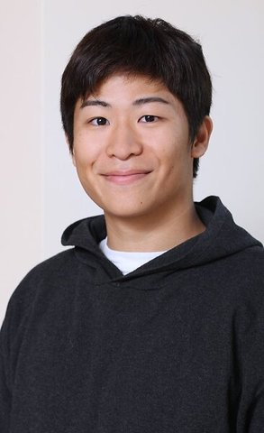
Ryan Liu is a 3rd year PhD student at Princeton University Computer Science advised by Tom Griffiths. His research focuses on understanding the similarities and differences between language models and humans through the lens of cognitive science, and using these insights to shed light on core problems in LLMs and AI agents.
AI Agents, Psychology
Fun fact: I sing A cappella
WebsiteI'm a Master's student in Data Science at NYU focused on AI safety evaluation and applied LLM research. My current work centers on decoupling safety behaviors from general problem-solving in language models.
AI Safety, LLM Evaluation, Agentic AI Systems
Fun fact: I love hosting themed dinner parties, full commitment: custom menu, playlist, dress code, the works.
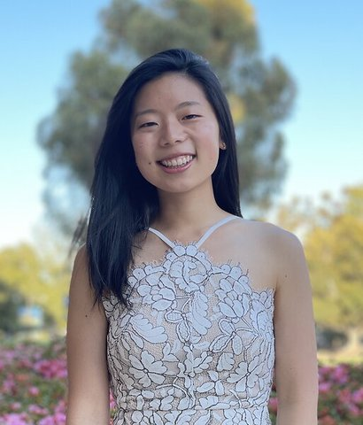
Allison is a 4th year computer science PhD student working with Dr. Olga Russakovsky at Princeton University. Broadly, she is interested in the intersections of computer science, psychology, and cognitive science.
AI, HCI
Fun fact: I love to cook for my friends, play spikeball outside, go rock climbing, and just spend quality time with my friends and family!
WebsiteI am a PhD student in the Computation and Decision-Making Lab at NYU. I explore decision-theoretic models of human choices during pedagogy and learning.
Computational Cognitive Science, Pedagogy
Fun fact: I have been making time capsule playlists every season since the start of 2016, so I can remember all the music I've listened to!
Website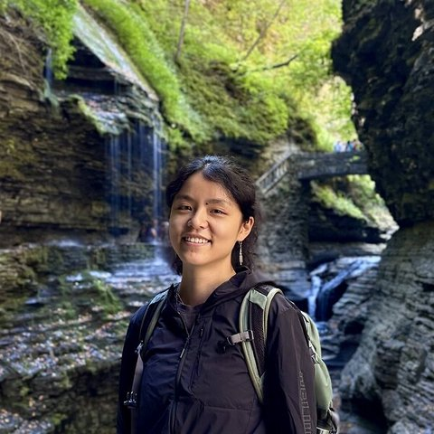
Chenyi (she/they) is a PhD student in Psychology at Cornell University. Chenyi Li studies creativity and intelligence, especially in the emerging human-AI society.
Creativity, Human-AI Collaboration
Fun fact: Chenyi and her cat Buchi are both good at bouldering.
Website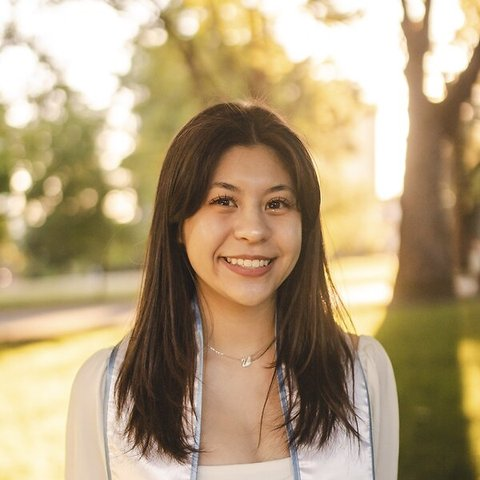
Kristina is a Master's in Data Science student at NYU (May 2026) researching LLM safety and bias-resistance. Her work with Professor Ilia focuses on the end-to-end pipeline of on-policy distillation for building LLMs that are resistant to sycophancy.
LLM Sycophancy, Computational Biology, Agentic AI
Fun fact: I love traveling and exploring new countries through cultures and food, taking photos and videos to remember the memories.
LinkedInAlso
Haoyu Hu, Sunayana Rane.
Collaborating labs
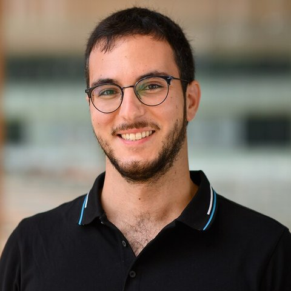
Raja is a Research Fellow at the Kempner Institute at Harvard. He completed his PhD at Princeton in the Griffiths Computational Cognitive Science Lab.
Cognitive Science, Representations, AI
Fun fact: Check out Raja's list of recommended short reads: https://raja-marjieh.github.io/short/
WebsiteCognitive Science, Language, Social Interaction
Fun fact: Find me in a jazz kissa
Google Scholar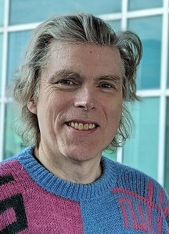
Matthias Schonlau, Ph.D., is a Professor in the Department of Statistics and Actuarial Science at the University of Waterloo, Ontario, Canada. Prior to his current appointment he spent 14 years at the RAND Corporation, the National Institute of Statistical Sciences, AT&T Labs and the German Institute for Economic Research, DIW.
survey methodology, visualization
Fun fact: In my spare time, I write songs about life's adventures and play guitar.
WebsiteI am an assistant professor in Computer Science and Data Science at New York University. Before I was at UT Austin, Google AI, UW, and Cornell.
Knowledge Rich Tasks, Retrieval, Human-LLM Interaction
Fun fact: I tend to like sad, character-driven movies.
Website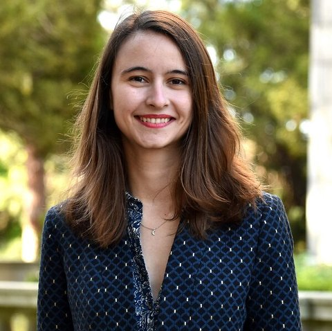
Andreea Bobu is an Assistant Professor at MIT in AeroAstro and CSAIL. She leads the Collaborative Learning and Autonomy Research Lab (CLEAR Lab), where they develop autonomous agents that learn to do tasks for, with, and around people.
Human-Centered Robot Learning, Algorithmic HRI
Fun fact: I dabble in DJing and music production in my free time
WebsiteAlso
Thomas L. Griffiths, Zach Pardos, Nori Jacoby, Umang Bhatt, Joshua B. Tenenbaum, Kelsey Allen, Mark Ho.
Thought pawrtners
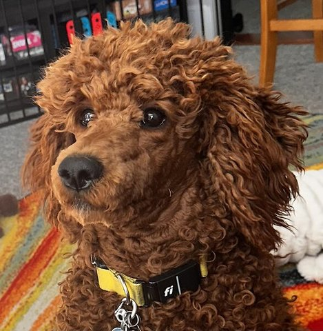
Fun fact: Likes sticks and cuddles
Collaborator network
Adrian Weller, Pol van Rijn, Kerem Oktar, Harin Lee, Andi Peng, Theodore R. Sumers, Olga Russakovsky, Bonan Zhao.